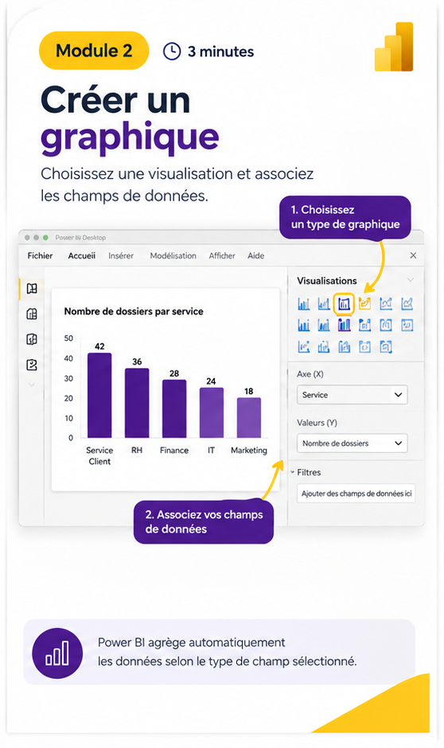

01
Vous partez d’Excel
Vous connaissez les tableaux et les données de base. Découvrez comment les utiliser dans Power BI.
Prérequis familierApprenez à transformer un tableau Excel en un graphique clair dans Power BI grâce à une méthode simple, visuelle et guidée.
Les données sont utiles, mais une bonne représentation aide à repérer les tendances et à communiquer les résultats plus facilement.
Vous connaissez les tableaux et les données de base. Découvrez comment les utiliser dans Power BI.
Prérequis familierImportation, création du graphique, personnalisation : trois étapes concrètes, dans un ordre facile à retenir.
Progression guidéeDécouvrez comment quelques choix visuels peuvent rendre un graphique plus lisible et utile.
Objectif pratiqueL’objectif est de comprendre la logique des étapes, pas de mémoriser une longue liste de fonctions.
Découvrir les modules →Le parcours pédagogique est prévu sur 15 minutes. Chaque module présente son objectif, une illustration et les actions à reproduire dans Power BI Desktop.
Ouvrir le classeur et charger la feuille qui contient les données.
5 minutesChoisir un visuel, puis associer les catégories et les valeurs.
3 minutesAméliorer le titre, les couleurs et les étiquettes si elles sont utiles.
7 minutesRésultat attendu : les données du classeur sont chargées dans Power BI Desktop.
À vérifier : la bonne feuille est sélectionnée, les en-têtes sont lisibles et les colonnes attendues sont présentes.

Résultat attendu : un premier visuel présente les données de façon compréhensible.
Astuce : les barres/colonnes servent à comparer des catégories ; une courbe est souvent adaptée à une évolution dans le temps.
Résultat attendu : un titre explicite, des couleurs lisibles et des étiquettes utiles si elles sont pertinentes.
Règle d’or : personnaliser ne signifie pas ajouter un maximum d’effets. Le but est de rendre le graphique plus clair.
Téléchargez la fiche mémo illustrée au format PDF et gardez-la à portée de main pendant la pratique.
Pour ajouter votre vidéo, placez le fichier formation-power-bi.mp4 dans le dossier assets du site.
La formation s’appuie sur une démonstration concrète de Power BI. Le but est de montrer les actions utiles sans surcharger l’écran d’explications.
Répondez à cette question puis lisez l’explication.
Cochez les étapes que vous savez refaire pour repérer ce qu’il reste à pratiquer.
Non. Cette mini-formation vise les débutants sur Power BI. Connaître les bases d’Excel est utile pour reconnaître les données à importer.
Le parcours pédagogique de référence est prévu sur 15 minutes (5, 3 et 7 minutes). La vidéo actuellement réalisée dure environ 3 min 04 s et constitue une version condensée.
Non. Elle se concentre sur une première réalisation : importer les données Excel, créer un graphique et personnaliser quelques éléments essentiels.
Le bouton d’accès est pour l’instant une démonstration. Avant la mise en vente, il faudra le relier à une page de paiement et préciser le prix, les conditions d’accès et les ressources incluses.
Découvrez une méthode simple pour passer d’un tableau Excel à un graphique Power BI plus facile à lire.
Le handout PDF est disponible au téléchargement. Le paiement n’est pas activé sur ce prototype.